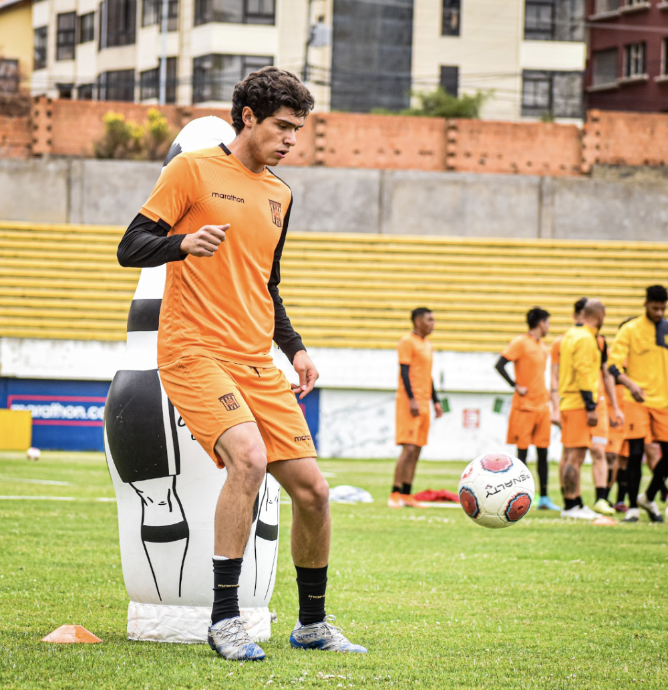

Personal Information
Date of Birth: 20th July 2004
Origin: La Paz, Bolivia
Current Location: Notre Dame, Indiana, United States
Major: Applied and Computational Mathematics and Statistics (ACMS)
Minor: Business (ACMS)
Contact: fgarret2@nd.edu | +1 (312) 978-5485
LinkedIn: Felipe Garrett's LinkedIn

Education
German School La Paz: Valedictorian with the highest grade in the last ten years (GPA: 4.0/4.0)
University of Notre Dame: Major in Applied and Computational Mathematics and Statistics, Minor in Business (GPA: 3.8, Expected Graduation: May 2027)
Relevant Experience
Non-Profit Consulting Externship with PwC
Conducted data analysis and presented findings with interactive dashboards.

Banco Nacional de Bolivia
Fixed mathematical models for RORAC systems.
Fundación SOLYDES
Worked on investment projects and the Bolivian startup ecosystem.
Student International Business Council (SIBC) - PwC Travel Team
Developed and presented a market entry plan for a cyber insurance company in the US.
Tutoring
Learning Resource Center: Mathematics Tutor for Precalculus and Calculus.
Center of the Study of Languages and Cultures: Spanish Tutor for courses from levels 100 to 400.
Athletics
Professional Soccer Player for Club The Strongest, Bolivian Professional Soccer League Champion.
Captain of the Reserve Team: Led the pre-professional team.
Memberships and Leadership
Association of Latino Professionals for America: Part of the first national Latino professional association, with 81,000+ members, offering access to 50,000+ internships, dedicated to being the preferred partner for companies hiring Latino talent.
Latino Honor Society: Engaged in leadership initiatives, fostering cultural awareness within the Latino community in the US.
Health Awareness Organization: Leader of a nationwide school club to support students’ wellness and mental health during the pandemic.
Skills and Interests
Skills: CAS, Python, Microsoft Office, HTML
Languages: Spanish (Native), English (Fluent), German (Proficient)
Interests: History (20th Century), Bible Studies, Geometry, Professional Chess, Professional Soccer